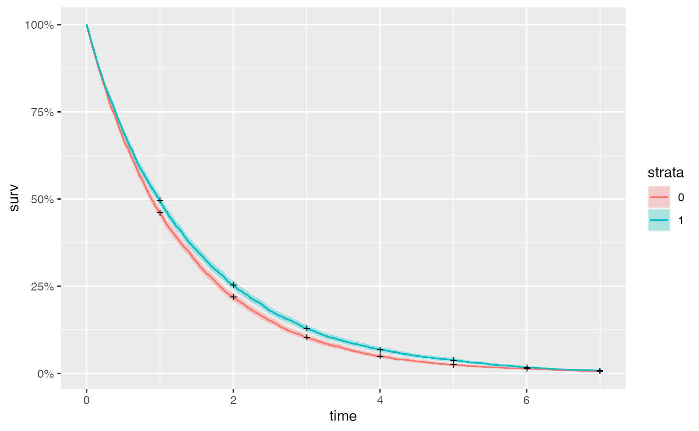
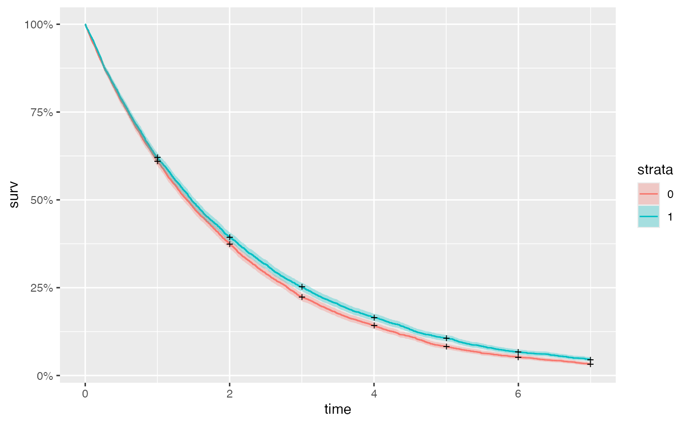

Examples.Rmd
formulas <- list(C ~ 1,
Z ~ X_l1 + C,
X ~ Z_l0 + C,
Y ~ X_l0 + C,
list(Y = list(Z ~1)))
family <- list(5,1,5,3,1)
link <- list("logit", "identity", "logit", "inverse")
pars <- list(C = list(beta=0),
Z = list(beta = c(-1/2,1/2,0.25), phi=0.5),
X = list(beta = c(0,1/2,1/10)),
Y = list(beta = c(0.25,0.5,0.05), phi=1),
cop = list(Y = list(Z = list(beta=0.8472979)))) # gives correlation 0.4
set.seed(123)
n <- 1e4
surv_model <- survivl_model(T=7, formulas=formulas, family=family, pars=pars, link=link)
dat <- rmsm(n, surv_model)
datl <- surv_to_long(dat)
library(ggfortify)
library(survival)
survplot <- survfit(Surv(t, t_stop, Y) ~ C, data=datl)
autoplot(survplot)
We recommend using ipw::ipwtm function to calculate ipw
weights for time varying confounding.
temp <- ipwtm(
exposure = X,
family = "binomial",
numerator = ~ 1,
denominator = ~ Z,
link = "logit",
id = id,
timevar = t,
type = "all",
data = datl)
datl$wt <- temp$ipw.weights
mod_correct <- coxph(Surv(t, t_stop,Y)~X + C, id = id, data = datl,
weights = datl$wt, timefix = FALSE)
mod_naive <- coxph(Surv(t, t_stop,Y)~ X + C, id = id, data = datl,
weights = rep(1,nrow(datl)), timefix = FALSE)#>
#> Attaching package: 'kableExtra'
#> The following object is masked from 'package:dplyr':
#>
#> group_rowsWe assume: - \(C\) is a Bernoulli r.v. with parameter \(1/2\); - \(Z_t\) is a normal random variable with mean \(C - 1/2 + X_{t-1}\); - \(X_t\) is a Gamma random variable with log mean \(Z_t/3 + C/3\); - \(Y_t\) is an underlying exponential distribution with rate \(X_t + C\); - the copula between \(Y_t\) and \(Z_t\) is Gaussian with fixed correlation.
formulas <- list(C ~ 1,
Z ~ X_l1 + C,
X ~ Z_l0 + C,
Y ~ X_l0 + C,
cop ~ 1)
family <- list(5,1,3,3,1)
link <- list("logit", "identity", "log", "inverse")
pars <- list(C = list(beta=0),
Z = list(beta = c(-1/2,1/4,1), phi=0.5),
X = list(beta = c(0,1/4,1/20), phi=0.25),
Y = list(beta = c(0.5, 0.2, 0.05), phi=1),
cop = list(beta=1))
set.seed(123)
surv_model2 <- survivl_model(T=7, formulas=formulas, family=family, pars=pars, link=link)
dat2 <- rmsm(1e4, surv_model2)
datl2 <- surv_to_long(dat2)
library(ggfortify)
library(survival)
survplot <- survfit(Surv(t, t_stop, Y) ~ C, data=datl2)
autoplot(survplot)
The ipwtm function allows for certain families, but not
the gamma family. Since we assume our exposure X is Gamma
(conditional on Z, C), we must calcualte the ipw by
hand.
mod_den <- glm(X ~ Z, family = Gamma(link = "log"), data = datl2)
mu_den <- fitted(mod_den)
phi_den <- summary(mod_den)$dispersion
## 2. Numerator model
mod_num <- glm(X ~ 1, family = Gamma(link = "log"), data = datl2)
mu_num <- fitted(mod_num)
phi_num <- summary(mod_num)$dispersion
num_dens <- dgamma(datl2$X, shape = 1/phi_num, rate = 1/(phi_num*mu_num))
den_dens <- dgamma(datl2$X, shape = 1/phi_den, rate = 1/(phi_den*mu_den))
datl2 <- datl2 %>%
mutate(ipw_instantaneous = num_dens / den_dens) %>% # instantaneous weight
group_by(id) %>%
arrange(t) %>%
mutate(ipw = cumprod(ipw_instantaneous)) %>%
ungroup()Fit the coxph model with and without weights, then recover estimates.